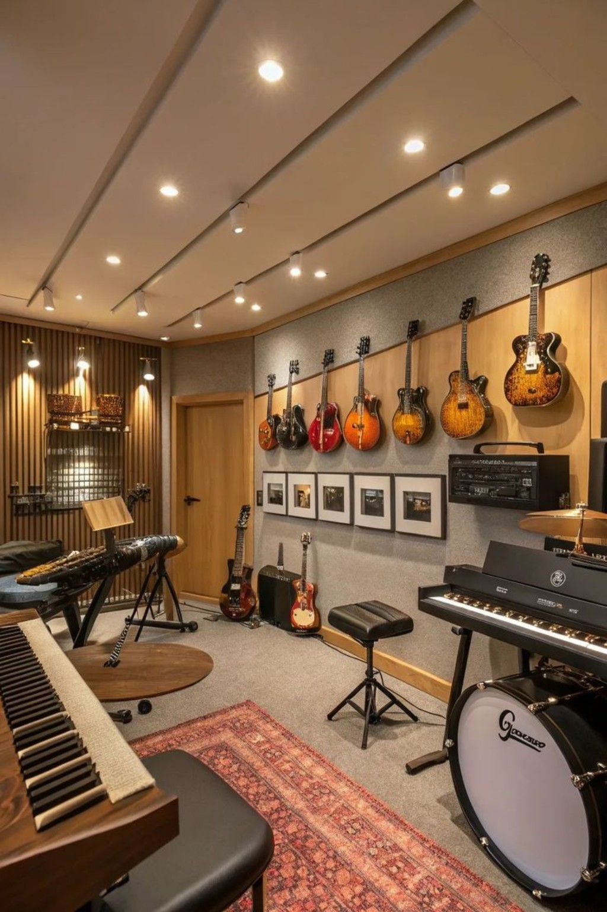

Level 01
Beginner
For students starting from the basics. Learn posture, notes, rhythm, simple pieces and practice habits.
Choose the level that matches your experience. Every stage is supported with guided practice and musical goals.

For students starting from the basics. Learn posture, notes, rhythm, simple pieces and practice habits.

Develop stronger technique, repertoire, ear training and musical expression with regular practice.
Refine performance skills, interpretation, stage confidence and advanced repertoire.
Vocal learners can work on breath, pitch, rhythm, diction and expression while building confidence through performance.
Choose Your Level